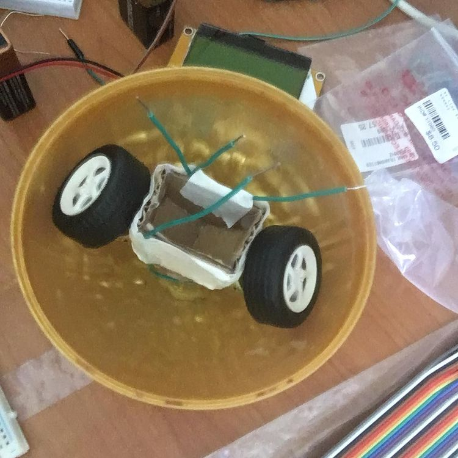
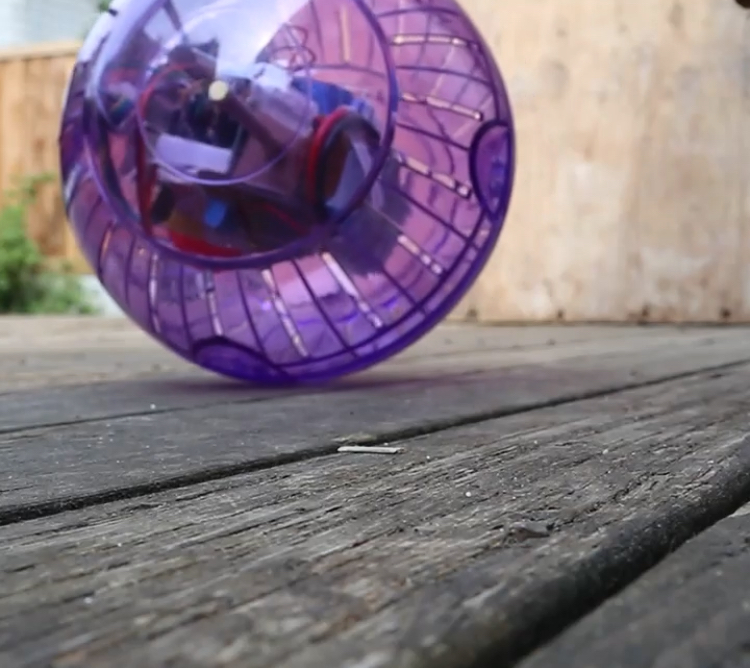
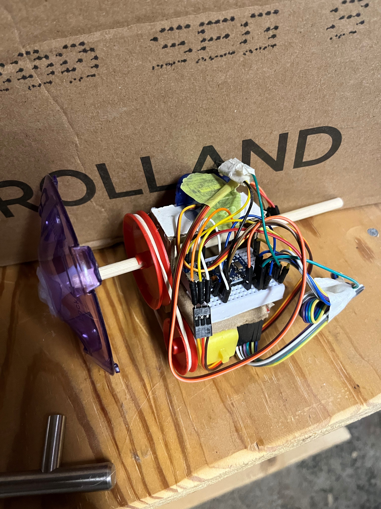
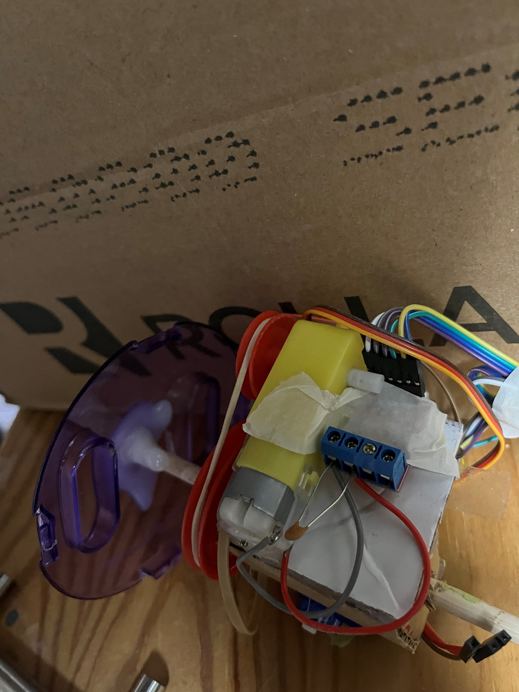
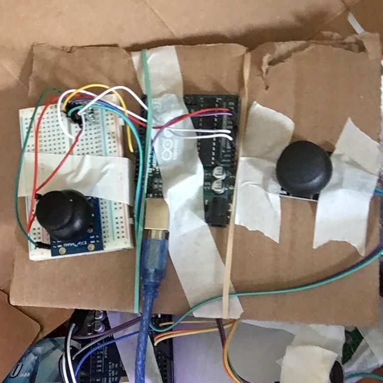
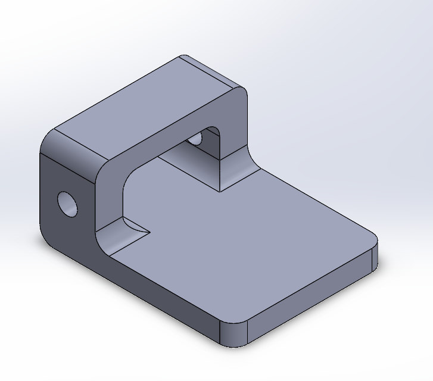

Remote-controlled spherical robot
This is a remote-controlled ball that I designed and built over the course of about a month from June to July 2021. It's not technically a robot as it is not autonomous, but I'm going to refer to it as a robot as that's what most people would call it.
Technical info
Here are the rough technical specifications of the robot:
- Pro Micro with an ATMEGA32U4 running at 16 MHz
- L9110s dual H-bridge module with PWM speed control from the MCU
- 9-gram servo for tilt control
- 433 MHz RF link for remote control
- 2S 1300 mAh LiPo as the power supply
- Generic plastic gear motor as main drive motor
- 17.8 cm hamster ball as the ball
Inspiration
I have had this idea floating around in my head ever since I saw Star Wars: The Force Awakens back in 2015. I thought the idea of what looked like a ball seemingly moving around on its own was cool and I didn't want to buy a Sphero to mess around with it (either the regular version or the BB-8 version). I also saw videos from the likes of James Bruton of his excellent BB-8 replicas, and I wanted to have something like that. I tried building a simple BB-8 replica at the time, but due to a lack of patience and engineering skills, I was sadly not able to finish the project.
Picking the project back up
During Christmas of 2020, I was gifted a giant Ferrero Rocher by one of my siblings. Once I had finished all the delicious chocolate, I was left with a plastic sphere that I thought would be quite good to make a ball robot with. My first idea was to make a small 2-wheeled RC car with differential motor drive to turn it and have that drive around inside the ball. I started working on this idea in June of 2021.

The engineering process comes into play
When I started prototyping this idea, I began running into some mechanical problems. Mainly, the small 3V DC motors I was using could not output enough stall torque to even make the robot twitch when stationary, and I found that their operational speed was way too fast to use them without some kind of speed reduction mechanism. This kind of killed off the idea of the differential drive inside of the ball, and instead I designed a new drive system that had the motor driving an axle that was connected to the ball, with a servo moving a weight (the battery) back and forth for steering. This allowed me to use a rubber-band belt reduction to interface the motor and the axle, but I found that this still did not produce enough stall torque to move the robot. I thought this was due to the weak 9V batteries I was using to power the robot, so I bought a 2S LiPo to supply more current without dropping the supply voltage (it was crashing the microcontroller). I also gave up on using the small Ferrero Rocher ball and bought a hamster ball for more space. This still didn't work, so I gave up on the bare DC motors and scrounged up a geared DC motor from a useless box kit. This finally produced enough stall torque and made the robot move.
This wasn't the only problem I encountered with this robot. One problem that greatly delayed my finishing of the project was that the motor seemed to be interfering with the radio receiver. I knew this because whenever the main motor would be rotating, the servo became non-responsive, and when I disconnected the motor from the motor driver and increased the throttle, the servo responded. I eventually solved this by having the motor shut off briefly to allow the radio receiver to listen for the next throttle and steer values from the transmitter. This is far from the optimal solution, but it works quite well for now. My use of long wires coupled with the small space that the robot could occupy likely contributed to the interference problems, so in a future more polished version, I will use shorter wires to try and mitigate this problem.



The code
I always underestimate the amount of coding work that Arduino projects will take. The code for the transmitter was pretty simple: I just read the positions of 2 joystick potentiometers and sent them with some check characters over radio using the RadioHead library. The code for the robot was far more complicated. This was mainly due to the fact that I couldn't use analogWrite or the servo library to control the motors, as that interfered with a hardware timer that RadioHead was using. I instead had to write some code to implement PWM in software. It basically just generates 2 square waves, each with a different pulse width and frequency. One square wave is for driving the servo and the other is for driving the motor. This was accomplished using the microseconds command in Arduino, which gets its value from another hardware timer that does not get interfered with by RadioHead. One trick that I used that greatly simplified developing the firmware for this project was that I finalized the transmitter code very early on and didn't change it after I had finalized it. This allowed me to consolidate software development onto just the code for the robot, and I didn't need to debug the robot and the transmitter code at the same time. To help with this, the transmitter code was intentionally kept simple, so that I knew that it would just work, and that I didn't have to debug it if something was not working.

New things I tried doing with this project
Being that this was one of my first projects I did after my first year of engineering, I wanted to apply some of what I had learned about how professional engineers design things to this project. One of these practices is sketching out ideas before using CAD or making it. I had done this a little bit in previous projects, but not nearly at the level that I did with this project. Doing this allowed me to compare multiple different ideas at the same time to better identify which one is the best. When I just conceptualized ideas in my head without sketching them, I was less able to visualize the differences between designs and choose the better one, due to the inherently more limited vision of my "mind's eye" than my actual eyes. I was also able to get a better idea of how components fit together before actually building them. While it is not as good as CAD or actual prototyping, sketching does give you a rough idea and a visual aid for how components fit together, which can help prevent future design mistakes. I also made more use of prototyping and testing in this project. In previous projects, I would tend to try to build it up as fast as possible and test the whole thing all at once. This made it harder to debug, as problems were abstracted behind their respective subsystems. However in this project, I was much more careful to test individual subassemblies before integrating them into the final device, which did help isolate and remove problems, and definitely improved the quality of the final product.
Future work
While this project is done for now, there are a few things I would like to add to it in the future when the opportunity arises. One of these things is a 3D printed structure. I have already designed the structure in SolidWorks as an exercise to myself, I just need to 3D print it. I have a 3D printer, but it is currently out of filament, so this will have to wait until I can get some filament. Another thing I would like to do is to switch out the RF link radio system for something like an nRF24, as the range on the RF link that I'm currently using is abysmal. I would also like to implement an accelerometer/gyroscope and use its data in an active control loop to keep the internals of the robot balanced at all times. I vastly overestimated the passive stabilization capabilities of the bottom-heavy robot, and I also overestimated the amount of damping that the whole device would have when rocking back and forth. By using an accelerometer/gyroscope, I would be able to implement a control loop that allows for the counterweight to counteract any oscillations induced in the robot.
